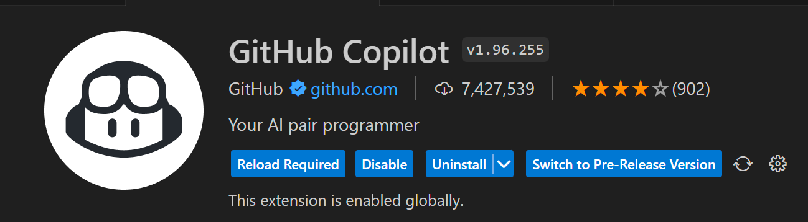
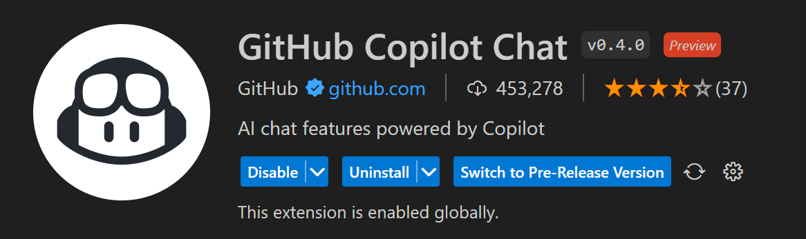
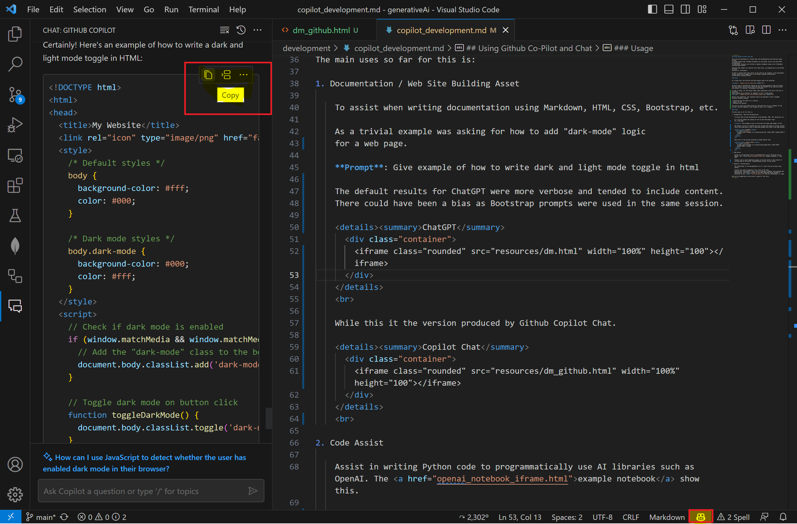

Using Github Copilot and Chat
This site was developed in a Github repo with documentation and tutorials being written in Visual Studio Code. Markdown documents are the master source from which HTML documentation is generated. Tutorials are written as Jupyter notebooks using a mix of Markdown and executable Python.
Assuming that readers are familiar with these tools, Github Copilot and Chat was examined for its ability to assist in code generation.
To help in making these tools which can be used for UX, Graphics or UI development, Github issues can be logged here
Current impressions:
- While useful, results are tied to the LLM being used and the parameters set for prompting.
- Better chat integration would be useful, even if to the level provided by non-chat assistance.
- The results are "minimalistic" by default. This is good for inserting "snippets" but less useful
for producing standalone results. - There is no caching / storage mechanism for reuse and at least for Visual Studio Code integration is tied to the workspace.
- The "follow-up" suggested prompts are sometimes useful but many times not topical or related to the previous prompt, This can lead the user to receive multiple responses to unrelated topics.
Setup
As a setup step, the Copilot and Chat plugins need to be installed.
|  |  |
The chat interface for Copilot is available by signing up for the beta program at this time of writing. The chat feature can be used in a similar way to ChatGPT but within the context of a working environment. This has the added advantage of avoiding some context switching. (There are ChatGPT and other unofficial add-ons which are available
but not considered here)
The following is a snapshot with and chat add-ons installed:

If chat is setup, for the Visual Studio Code integration a new tab on the left is available where prompts may be entered.
Unlike code completion, the responses need to be migrated to their intended location. Options (highlighted on the left) include:
- Inserting into the editor at a location
- Export to file
- Running from terminal.
The last option (Running from terminal) only makes sense for code which can run as a command. At the current time the response is not checked to see if it's runnable.
Copilot can be turned on or off via the  icon highlighted on the bottom right.
icon highlighted on the bottom right.
Usage
The main places for usage are mentioned in the following sections.
Documentation / Web Site Building Asset
To assist when writing documentation using Markdown, HTML, CSS, Bootstrap, etc.
-
Example 1 : Dark Mode Support
As an example was asking for how to add "dark-mode" logic for a web page.
Prompt: Give an example of how to write dark and light mode toggle in html
The default results for ChatGPT were more verbose and tended to include content.
ChatGPT
While this is the version produced by Github Copilot Chat.
Copilot Chat
Interestingly it uses a mechanism which is not available for all browsers. When asked to provide such a version, it required to have an active server running, but was very close in logic to the ChatGPT one.
-
Example 2: Accessibility Examples
As a second example, tips for making a web page accessible
was prompted for, along with an example. Interestingly a follow-up prompt was required to ensure accessibility for those that are color-blind.Response
"Code" Assist
Assist in writing Python code to programmatically use AI libraries such as OpenAI. The example notebook show this.
Features such as code completion appear to be most useful in the context of writing code at this point, though Markdown assist is also useful.
-
Python Example for command line interface
Prompt: Write python code for a command line with arguments for a required input file name, and an optional output file pat
Response
import argparse parser = argparse.ArgumentParser(description='Process some files.') parser.add_argument('input_file', help='input file name') parser.add_argument('-o', '--output', help='output file path') args = parser.parse_args() print('Input file:', args.input_file) if args.output: print('Output file:', args.output)
In this example, we use the argparse module to create a command line interface with two arguments. The first argument is a required positional argument called input_file, which is used to specify the input file name. The second argument is an optional argument called output, which is used to specify the output file path.
To run this script, you would use the following command:
python myscript.py input.txt -o output.txtIn this example, myscript.py is the name of the Python script, input.txt is the name of the input file, and output.txt is the name of the output file. Note that the -o option is used to specify the output file path. If the -o option is not used, the output file path will be None.
-
Markdown Example for a scrollable table
Prompt: Write python code for a command line with arguments for a required input file name, and an optional output file pat
Response
<div style="overflow-x: auto;"> | Column 1 | Column 2 | Column 3 | Column 4 | Column 5 | | -------- | -------- | -------- | -------- | -------- | | Row 1, Column 1 | Row 1, Column 2 | Row 1, Column 3 | Row 1, Column 4 | Row 1, Column 5 | | Row 2, Column 1 | Row 2, Column 2 | Row 2, Column 3 | Row 2, Column 4 | Row 2, Column 5 | | Row 3, Column 1 | Row 3, Column 2 | Row 3, Column 3 | Row 3, Column 4 | Row 3, Column 5 | | Row 4, Column 1 | Row 4, Column 2 | Row 4, Column 3 | Row 4, Column 4 | Row 4, Column 5 | | Row 5, Column 1 | Row 5, Column 2 | Row 5, Column 3 | Row 5, Column 4 | Row 5, Column 5 | | Row 6, Column 1 | Row 6, Column 2 | Row 6, Column 3 | Row 6, Column 4 | Row 6, Column 5 | | Row 7, Column 1 | Row 7, Column 2 | Row 7, Column 3 | Row 7, Column 4 | Row 7, Column 5 | | Row 8, Column 1 | Row 8, Column 2 | Row 8, Column 3 | Row 8, Column 4 | Row 8, Column 5 | | Row 9, Column 1 | Row 9, Column 2 | Row 9, Column 3 | Row 9, Column 4 | Row 9, Column 5 | | Row 10, Column 1 | Row 10, Column 2 | Row 10, Column 3 | Row 10, Column 4 | Row 10, Column 5 | </div>
In this example, we use a div element with the overflow-x: auto style to create a scrollable table. The table itself is created using standard Markdown syntax for tables. You can adjust the number of rows and columns as needed for your specific use case.
Pipeline / Infrastructure Building
The "publishing" of the documentation to it's final form was written using Python.
Co-pilot was used to generate a fair chunk of the code
dealing with "boilerplate" logic such as creating a command, file scanning and manipulation, and using a variant of the HTML generated using ChatGPT as mentioned in the Web Site Development page.
Things to try including creating a build and deployment pipeline
for this website using Github Actions. An example would look something like the following, which is useful even as a
starting template.
Prompt: Write a github actions file which will run a custom python script to prepare files. Copies the files to a publishable folder, and creates a downloadable package.
Response
name: Prepare and Publish
on:
push:
branches:
- main
jobs:
prepare_and_publish:
runs-on: ubuntu-latest
steps:
- name: Checkout code
uses: actions/checkout@v2
- name: Set up Python
uses: actions/setup-python@v2
with:
python-version: '3.x'
- name: Install dependencies
run: pip install -r requirements.txt
- name: Prepare files
run: python prepare_files.py
- name: Copy files to publishable folder
run: cp -r output_folder publishable_folder
- name: Create package
uses: actions/upload-artifact@v2
with:
name: my_package
path: publishable_folder